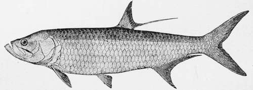
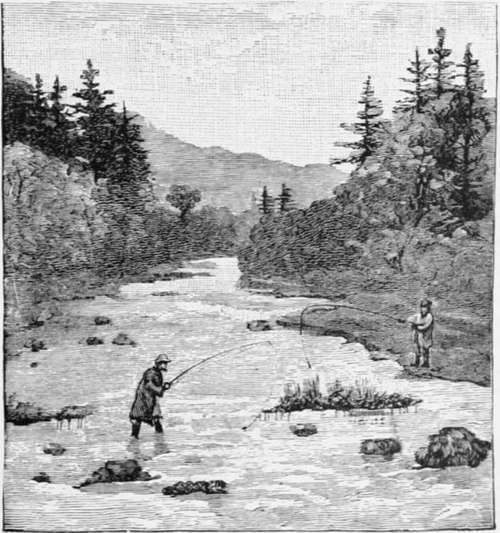

The Tarpon, Or Silver King. Part 5
Description
This section is from the book "American Game Fishes", by W. A. Perry. Also available from Amazon: American Game Fishes: Their Habits, Habitat, and Peculiarities; How, When, and Where to Angle for Them.
The Tarpon, Or Silver King. Part 5
As a rule the click of the reel will give notice of the Tarpon's presence. In this instance, the fish must have taken the bait and advanced in the direction of my boat, thus preventing any warning. Some persons coil thirty or forty feet of line on the seat of the boat, after having made their cast, and watch closely for its disappearance. With a good, easy-running reel I consider this unnecessary.
It is a debatable question whether to "strike" a Tarpon after he has taken the bait. Many Tarpon experts are in the habit of doing so; many others do not. It is generally conceded by all that a Tarpon must be well hooked in the gullet before the chances are at all favorable for his capture. For this reason he is allowed to run with the line until it is supposed he has had time to swallow well the bait. When he feels the hook he immediately conies to the surface. If he has not thoroughly swallowed the bait, he will eject it. If he does not swallow it, a strike will accomplish nothing, for the inside of the Tarpon's mouth is gristly and tough. It is only in rare instances that Tarpon have been caught when hooked in the mouth. Their tongue is hard, and its surface closely resembles a whetstone. It is long, being shaped like a calf's tongue, and with it they can eject, easily, anything within reach. This power with the tongue is one of the most astonishing characteristics of the Tarpon. When the bait is well swallowed, a "strike" is unnecessary, for the movements of the fish and the tension used when the fish is beneath the water will fasten the hook well in him. A "strike" would also prove disastrous if made, as it is likely to be, at the moment the Tarpon jumps from you.
Tarpon, Or Grande.
Lunch-hour came and passed without incident, save the occasional replenishing of bait. The sun had crossed the meridian and started upon its western descent, and the flood-tide had reached the turn, ere Tarpon number two made his appearance. When I next reached for my pole, which I had rested upon the side of the boat, my attention being attracted by the whiz! whiz! of my reel, I took the precaution to look at my watch. It was just five minutes past one o'clock. My line ran out rapidly, but with that steady movement so characteristic of the Tarpon, and which so readily distinguishes him from a Shark, which runs like a frightened deer. Seventy-five-a hundred feet have disappeared! The excitement of the moment is pictured in the darky's eyes, whose whites appear to grow with the moments.
"Whe-w! he's a regulah whale," ejaculates Ben, as my Tarpon breaks through the water, disclosing his immense proportions in a mighty leap of ten feet aloft. Another! another! thrice more, and all in as many minutes, does Mr. Tarpon wend his way heavenward. A large fish he is, too, and a magnificent spectacle. In the meantime Ben has pulled in the anchor and is at the oars, backing gently in the direction the Tarpon has taken. After his first outburst of rage and terrific endeavor to throw out the hook, the fish begins to take things a little more easily. With an occasional running, lengthwise jump, or skip, he makes up the bay, where the channel is narrower, and the proximity to the Mangroves dangerous. To head him off I directed Ben to row ahead of him to one side, meanwhile keeping the line taut, and reeling in as much as prudence permitted. This maneuver succeeded, and the Tarpon started back down stream, with a rush that carried out two hundred feet off my reel. I gave him as much of the weight of the boat as was discreet, throwing him line whenever he came out of water, which he did frequently. In this manner he towed us for a mile, to where the river widened out into a small bay. On the way I pass fellow-fishermen, who greet us with hurrahs, and such exclamations as "Ain't he a beauty!" "Don't he fight nobly!" "A hundred-and-sixty-pounder, at least!" etc., etc.
Every time I succeeded in getting him anywhere near the boat, he would make another spurt. Gradually these became feebler; and he finally took to circling round the little bay, all the time, however, some twenty or thirty feet distant from the boat. I kept him hard at work, never allowing him to get his second wind, and at last had the gratification of seeing him come to the top and turn upon his side, showing his complete state of exhaustion. It was plain sailing after that, and I soon had him within reach of the gaff, and when my boatman gently drew him over into the boat it was half-past two o'clock. He was a noble prisoner; and it had taken just one hour and twenty-five minutes to land him. He weighed one hundred and forty-four (144) pounds, and measured six feet eleven inches. I had him mounted, and presented him to the Polytechnic Society of Louisville, Kentucky.
This is the way one Tarpon was caught. Another might act differently. While there is a general similarity in their actions, the Tarpon has a great deal of individuality, and each of the fish I have caught has acted, in some particulars, differently from the others. Sometimes, when they feel the hook, they come to the surface and skip about like a small Sardine chased by a Shark, in every direction, wild in their efforts to free themselves, and are the very picture of frenzy.
The natural history of the Tarpon is still in a very embryonic state. So little is known of its habits that I have never seen stated in print the season of their spawning. At certain seasons their coloring is more brilliant than at others, indicating that they have been in deep water. How long they remain there, or when or where their spawning occurs, seems to be yet undetermined. The fact that the scales on the back are rendered black by the rays of the sun would seem to indicate that they spend the most of their time in comparatively shoal water. Their backs are exposed to the sun as they sport about on the surface, as they are so fond of doing, or as they feed about on the oyster-shoals, or mud-shallows, after Mullet, much in the manner of a porpoise.
The natives of the gulf coast say that the Tarpon feeds, like the deer, when the moon is south. As the moon controls the tides, and the best time for fishing is known to be upon the flood or full tide, there may be some reason for their assertion. I have known, too, of Tarpon taking the bait of those fishing by moonlight.
Tarpon-fishing is still in its infancy, and there is room for a great deal of interesting matter upon a most interesting subject. There is no question it is the gamest fish in the world, fights furiously and until it is entirely exhausted, and could never be captured with a rod and reel but for its frantic movements and wonderful leaps from the water, the first ten minutes after it feels the hook. During these ten minutes all you have to do is to give the fish all the line he wants, and see that the reel runs free. After he is unable to make his leaps, he will raise his head out of the water and shake it viciously. To completely exhaust him will require from one to three hours, according to the work you compel him to perform in towing your boat.
I should not forget to mention one remarkable characteristic of the Tarpon. Comparatively few of the smaller ones are caught with rod and line. The young fish seem, contrary to the general rule, to be more wise and wary than the older ones. In my experience, ten fish weighing more than seventy-five pounds are caught to one weighing less. 9
By W. N. Haldeman.

Continue to: